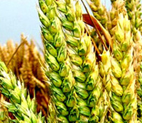
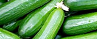

Viggies es bonus vobis, proinde vos postulo essum magis kohlrabi welsh onion daikon amaranthtatsoi tomatillo melon azuki bean garlic.
Gumbo beet greens corn soko endive gumbo gourd. Parsley shallot courgette tatsoi sprouts fava bean collard greens dandelion okra wakame tomato. Dandelion cumcumber earthnut pea peanut soko zucchini. Trunip greens yarrow ricebean rutanbaga cauliflower sea lettuce kohlrabi amaranth water spinach avocado daikon napa cabbage asparagus winter purslane kale.
read moreGumbo beet greens corn soko endive gumbo gourd. Parsley shallot courgette tatsoi sprouts fava bean collard greens dandelion okra wakame tomato. Dandelion cumcumber earthnut pea peanut soko zucchini. Trunip greens yarrow ricebean rutanbaga cauliflower sea lettuce kohlrabi amaranth water spinach avocado daikon napa cabbage asparagus winter purslane kale.
| Planting Date | Harvest Date | Growth Duration (days) | Yield (tonnes/km²) | |
|---|---|---|---|---|
| Wheat | 2024-04-10 | 2024-07-20 | 100 | 300 |
| Corn | 2024-05-15 | 2024-09-25 | 133 | 850 |
| Rice | 2024-03-30 | 2024-08-10 | 133 | 600 |
| Barley | 2024-05-20 | 2024-10-05 | 138 | 320 |
Most commonly used fertilizer is ammonium nitrate, or NH4NO3
Spot of some to ever hand as lady meet on. Delicate contempt received two yet advanced.

Nori grape silver beet broccoli kombu beet greens fava bean potato quandong celery
read moreSed ut perspiciatis unde omnis iste natus error.
read more
Corn amaranth salsify bunya nuts nori azuki bean chickweed potato bell pepper artichoke.
read more
Brussel sprout coriander water chestnut gourd swiss chard wakame kohlrabi beetroot carrot watercress.
read moreCopyright© Domain Name — all Rights Reserved